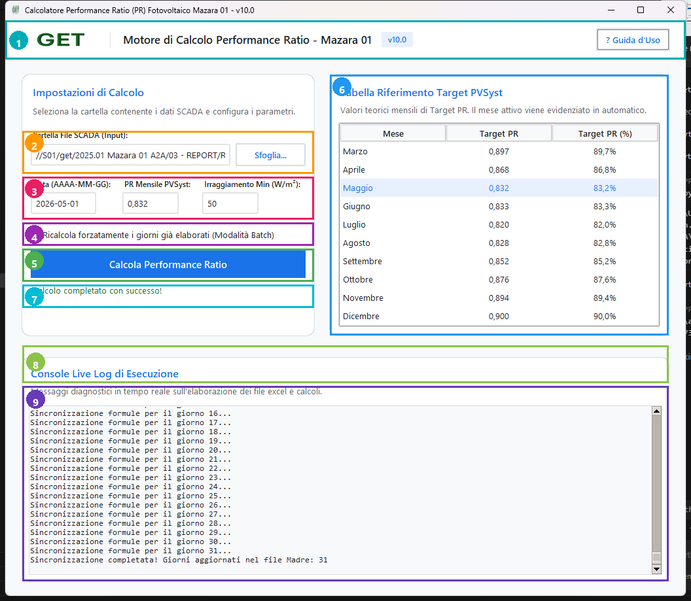

Software: PR Calculator v15.0 · Cliente: GET SRL · Impianto: Mazara 01 (12.62 MWp)
Il software PR Calculator v15.0 automatizza il ricalcolo del Performance Ratio (PR) giornaliero e mensile, corregge ed interpola le anomalie dei contatori fisici SATAC, compensa le perdite di rete e di curtailment, converte i file telemetrici dal portale meteocontrol VCOM, e aggiorna in tempo reale il File Madre Excel 00 PR_recalculation_AGOS.xlsx.
L'interfaccia utente è suddivisa in 9 aree funzionali principali per un utilizzo intuitivo ed esente da errori di imputazione.

Contiene il brand GET SRL, la versione del software e il pulsante di aiuto rapido [ ? Guida d'Uso ] che apre istantaneamente questo manuale nel browser.
Permette all'operatore di selezionare la cartella dei file grezzi tramite il pulsante [ Sfoglia... ]:
2026 08/19).2026 08). Il software rileva automaticamente tutte le cartelle dei giorni (01...31) ed esegue il calcolo in sequenza automatica.Gestisce la configurazione dei parametri di calcolo delle perdite e del sensore di irraggiamento:
| Parametro | Descrizione e Funzione | Valore Predefinito |
|---|---|---|
| Data (AAAA-MM-GG) | Rilevata automaticamente dal nome della cartella o dai file Excel. | Automatico (es. 2026-08-19) |
| PR Mensile PVSyst | Obiettivo mensile teorico letto dalla tabella PVSyst con degradazione annua dello 0.4%. | Auto-compilato |
| Irraggiamento Min (W/m²) | Soglia minima per attivare i calcoli di perdita di energia per inverter. | 50 W/m² |
| Riferimento POA | Selezione del metodo di irraggiamento: Media (Average) (Standard IEC) o Conditional MAX (Tol. 10%). | Media (Average) |
Se la casella [ Ricalcola forzatamente i giorni già elaborati ] è attivata, il software ricalcola da zero tutti i giorni sovrascrivendo i file giornalieri esistenti. Se deselezionata, il software salta velocemente i giorni già elaborati.
Contiene i comandi principali dell'applicazione:
[ Calcola Performance Ratio ]: Avvia l'elaborazione completa del giorno o del mese batch.[ Sync SCADA PR ]: Importa il PR SCADA dal report KPI nel File Madre.[ Sync VCOM PR ]: Importa il PR dal file CSV VCOM nel File Madre.[ Interrompi ]: Esegue un arresto sicuro al termine del giorno in corso.Consente all'operatore di scegliere la sorgente dei dati per il calcolo:
19, 22, 23 nella casella o tramite la griglia interattiva).Mostra i valori di Target PR contrattuali mensili degradati dello 0.4%/anno a partire dal COD (Febbraio 2025). Evidenzia automaticamente il mese della data selezionata.
Mostra in tempo reale lo stato dell'elaborazione (es. "Elaborazione in corso: Giorno 19/31...") e segnala il completamento con successo.
Finestra di testo che riporta tutti i log dettagliati dell'operazione, la pulizia dei dati, le conversioni VCOM e la scrittura delle formule sul File Madre Excel.
Scenario: L'operatore deve ricalcolare l'intero mese di Agosto 2026 utilizzando i file SCADA ufficiali.
dist/PR_Calculator_v15.exe.[ Sfoglia... ] (Area 2) e selezionare la cartella del mese 2026 08.[ Calcola Performance Ratio ] (Area 5).PR_recalculation_DD_ago.xlsx e il File Madre 00 PR_recalculation_AGOS.xlsx viene popolato con le formule, le letture del contatore nella colonna Meter Reading [MWh] e i totali sulla Riga 36.Scenario: Nel mese di Agosto 2026, i giorni 19, 22 e 23 non hanno i file SCADA ma dispongono delle esportazioni CSV VCOM.
2026 08.19, 22, 23 oppure cliccare [ Seleziona Giorni... ] per far scansionare automaticamente le cartelle vcom/.[ Calcola Performance Ratio ].Scenario: Un file SCADA del giorno 19 Agosto è stato scaricato nuovamente per correzione e si desidera ricalcolare solo quel giorno.
2026 08/19.[ Ricalcola forzatamente i giorni già elaborati ] (Area 4).[ Calcola Performance Ratio ].Scenario: Aggiornare direttamente le colonne PR SCADA e PR VCOM nel File Madre.
[ Sync SCADA PR ] per selezionare il report KPI_Report_Daily.xlsx e popolare la colonna PR SCADA.[ Sync VCOM PR ] per selezionare il report Performance_ratio_vcom.csv e popolare la colonna PR VCOM.| Colonna | Intestazione Excel | Sorgente / Formula Scritta |
|---|---|---|
| A (1) | Data | Data del giorno (es. 2026-08-19) |
| B (2) | Irradiance TX1 | ='[PR_recalculation_19_ago.xlsx]PR_Calc'!$D$111 |
| C (3) | Irradiance TX3 | ='[PR_recalculation_19_ago.xlsx]PR_Calc'!$F$111 |
| D (4) | Irradiance Cond MAX | ='[PR_recalculation_19_ago.xlsx]PR_Calc'!$I$111 |
| E (5) | Meter Reading [MWh] (Novità v15) | ='[PR_recalculation_19_ago.xlsx]PR_Calc'!$L$110 |
| F (6) | Energy (day) | ='[PR_recalculation_19_ago.xlsx]PR_Calc'!$M$111 |
| G (7) | PR Total | ='[PR_recalculation_19_ago.xlsx]PR_Calc'!$BA$5*100 |
| H (8) | PR VCOM | Popolata tramite Sync VCOM PR |
| I (9) | PR Compensated | ='[PR_recalculation_19_ago.xlsx]PR_Calc'!$BH$11 |
| J (10) | External Availability [%] | =IF(F5="",0,(F5/(F5+K5+L5+M5))*100) |
| K-M (11-13) | TX1, TX2, TX3 Loss | ='[PR_recalculation_19_ago.xlsx]PR_Calc'!$AA$111 / $AN$111 / $BA$111 |